Armenian fusion
€ 47
- Armeense barbecue: rund- en varkenstomahawk
- 3 soorten salade
- Armeense kaas
- Armeens platbrood (lavash)
- Grand dessert: 2 soorten Armeens gebak, fruit en ijs
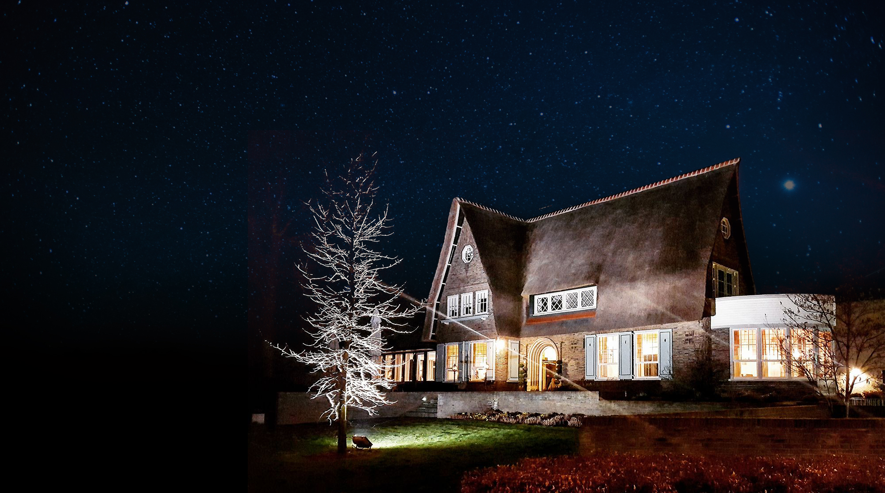
Restaurant in Veldhoven
In de sfeer van de monumentale villa bereidt chef-kok Karo Iskedjian zijn specialiteiten, geïnspireerd door internationale keukens. Van Armeense barbecue tot sushi.
Villa La Bella verwelkomt u van harte om te genieten van echte Armeense gastvrijheid en heerlijke gerechten. Laat u verrassen met gerechten die bereid zijn met stijl, passie en liefde.
Samen delen, genieten en het leven vieren staan in Armenië centraal. Familie is er erg belangrijk, en dat ziet u terug in de villa: het restaurant draagt de naam van moeder Bella en het hele gezin werkt mee aan de sfeer en de kwaliteit.
Bekijk de kaart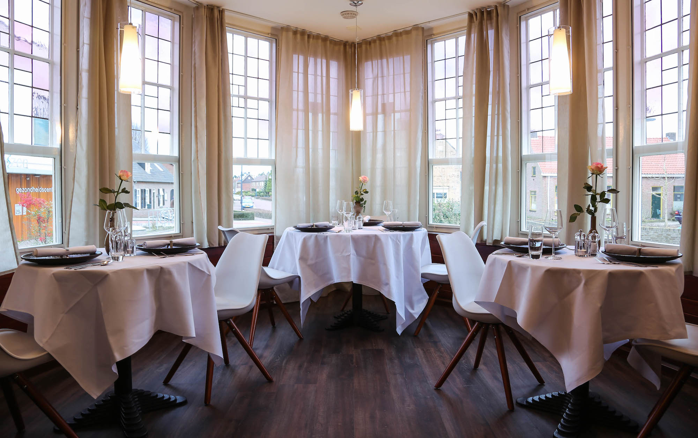
Een tafel vol: van Armeense barbecue met lavash tot sushi, sashimi en kreeft.
€ 47
€ 55
€ 69
€ 45
€ 59
Heeft u een allergie? Meld het ons bij het reserveren of aan tafel.
Exclusieve sushi rolls, 8 stuks per rol.
Alle hoofdgerechten worden geserveerd met ambachtelijke frites.
Liever thuis? Villa La Bella bezorgt ook aan huis. Bestellen gaat via Bistroo.
Thuis bezorgen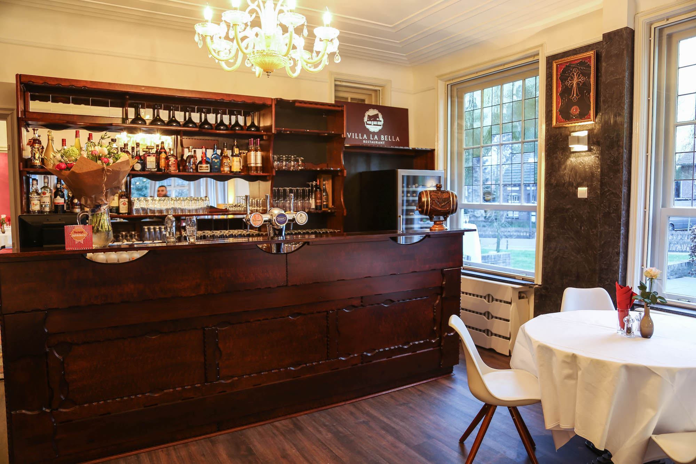
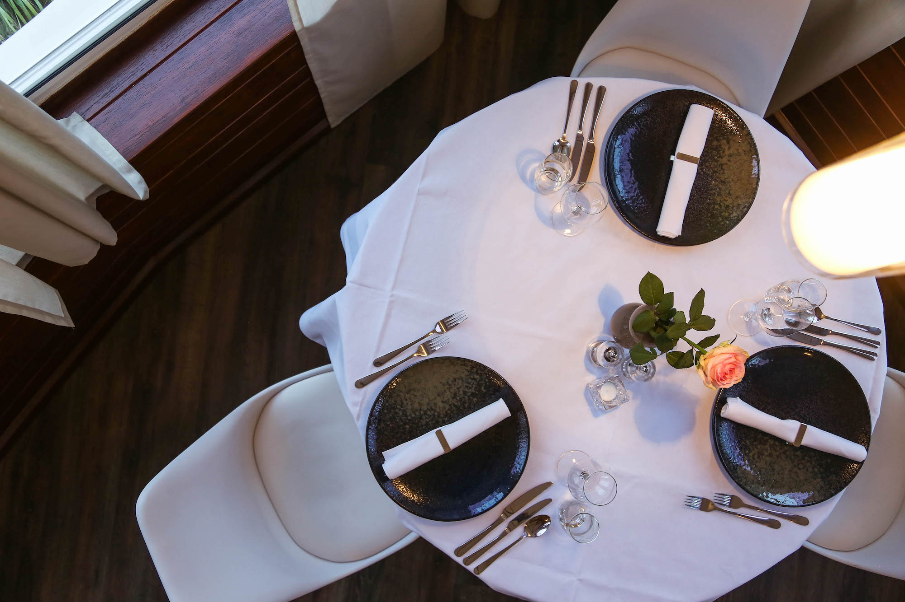
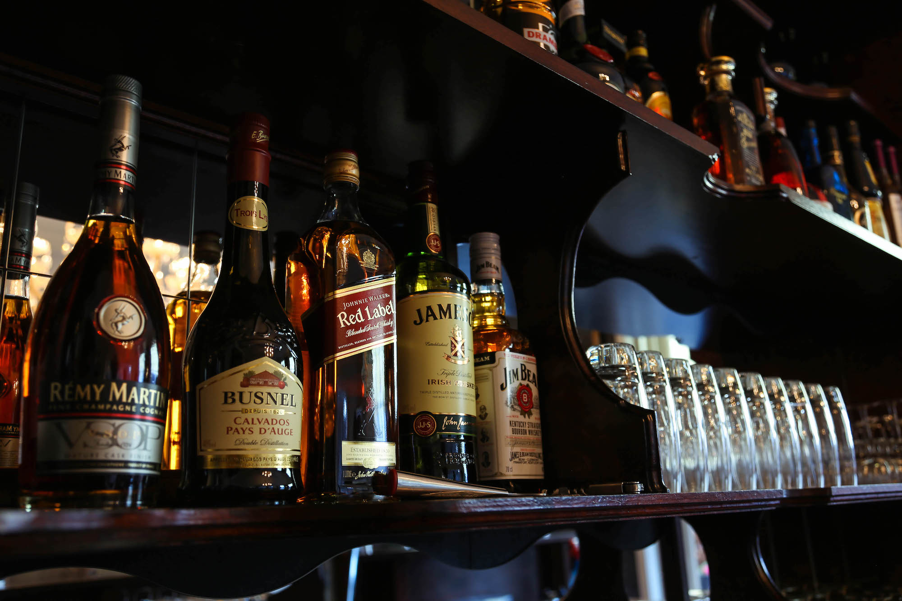
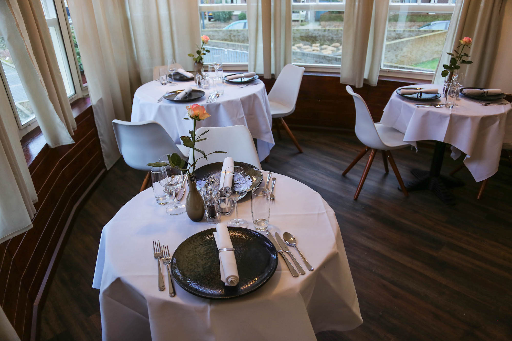
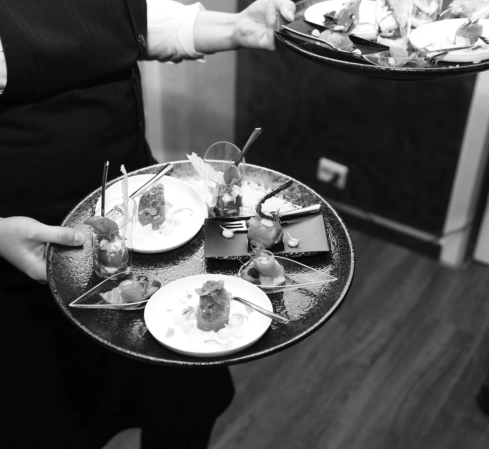
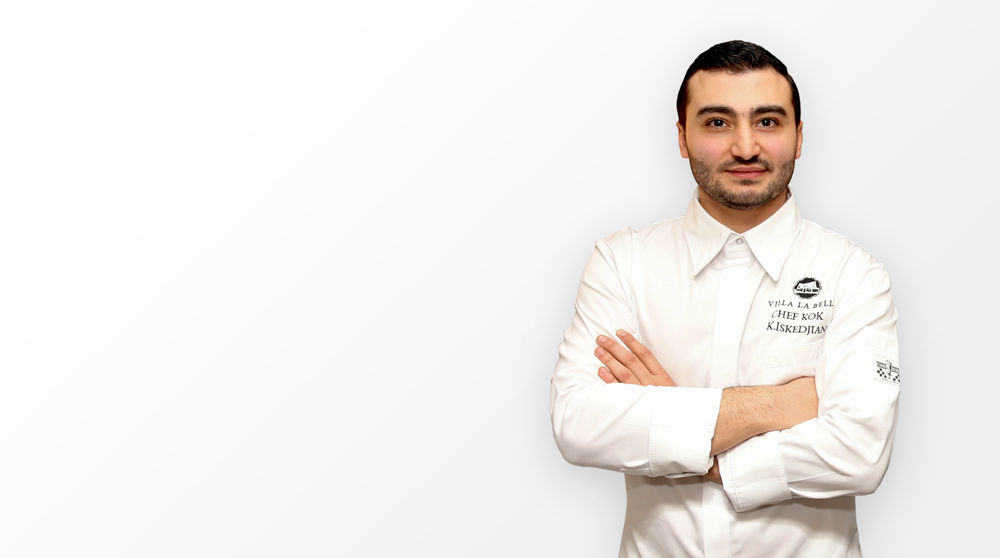
Het begon in 2008, toen het gezin Iskedjian vanuit Armenië naar Nederland emigreerde. Karo wilde eigenlijk fitnesscoach worden, maar door de lange wachtlijsten koos hij voor de koksopleiding bij ROC Eindhoven. Zonder het toen te weten stond hij aan de start van een mooie carrière.
In schooljaar 2009-2010 werd hij verkozen tot Topper van alle scholen van ROC Eindhoven. Hij won als beste kok de Hans Köll Award 2011 en in 2012 de Preuvenemint Award, een internationale wedstrijd voor studenten van horecavakscholen.
In 2013 begon hij zijn eerste zaak, vernoemd naar zijn moeder Bella. Restaurant La Bella werd een begrip in Woensel en omgeving. In 2017 opende Karo Villa La Bella, om mensen kennis te laten maken met de Armeense cultuur en de bijbehorende specialiteiten.
“Mijn moeder Bella heeft mij de passie voor lekker eten bijgebracht en me geleerd hoe belangrijk sfeer is.”
Karo is naast zijn familie ook alle mensen van ROC Eindhoven en het Summa College dankbaar die hem vanaf leerjaar 1 hebben bijgestaan, met name Mounir Toub en Peter van den Broek.
Na drie succesvolle jaren met La Bella in Eindhoven zocht Karo een grotere uitdaging. Zijn droom: een restaurant van hoog niveau dat voor een groot publiek betaalbaar is. In 2017 werd die droom werkelijkheid.
Het huis werd in 1928 gebouwd in expressionistische landhuisstijl, naar een ontwerp van architect A. Valk, en staat op de lijst van rijksmonumenten. De keuken is internationaal georiënteerd: elke cultuur komt weleens op de kaart, want Karo beperkt zijn creativiteit niet tot één soort keuken.
Karo kookt met emotie en liefde. Het uitgangspunt van elk gerecht is de balans van smaak, het behoud van vitamines en het design. Zo ontstaan gerechten die lekker, gezond en aantrekkelijk zijn.
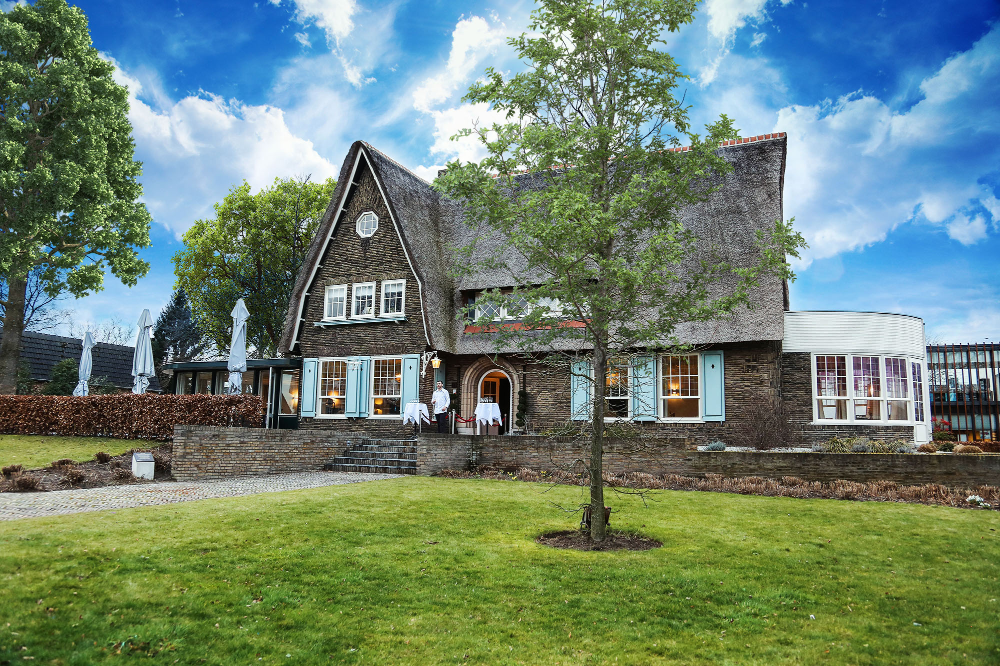
“Het is een voorrecht om mensen met koken te kunnen inspireren en daarbij dromen na te mogen najagen.”
Karo en Villa La Bella in de media: interviews, programma's en artikelen.
Naar de perspaginaAfzonderlijke representatieve ruimtes, een luxe sfeer, professionele bediening, privacy en snel internet.
Unieke arrangementen voor zakelijke bijeenkomsten, in ruimtes die ideaal zijn voor een zakelijk diner. Zo wordt het een succesvolle avond.
Borrelen is na elk evenement dé manier om gezellig af te sluiten. Villa La Bella verzorgt de borrel, wijn, bier, fris, een representatieve ruimte, een terras en bijpassende achtergrondmuziek.
Vanaf 10 personen verzorgt Villa La Bella een compleet arrangement op maat. Neem vrijblijvend contact op voor meer informatie.
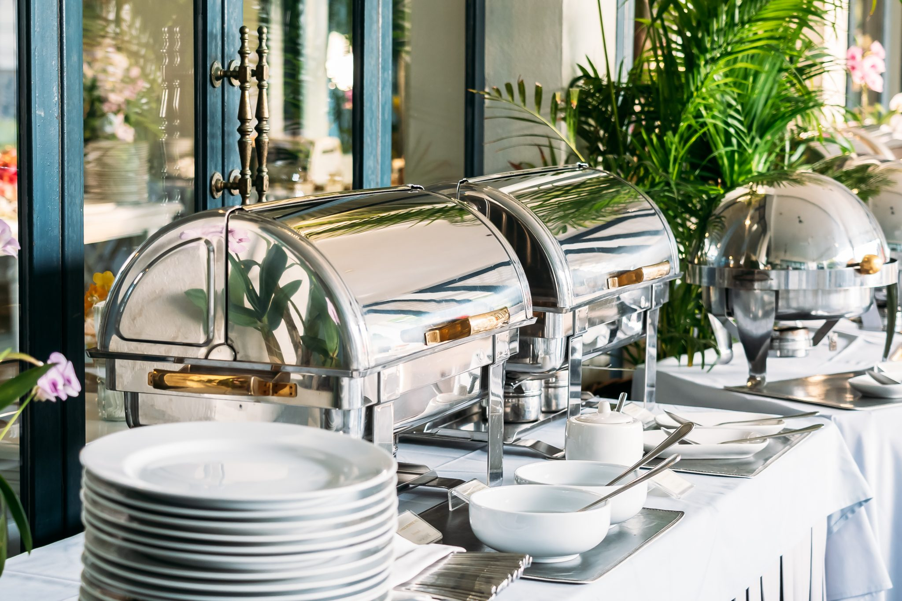
Zoekt u een verrassende en telkens vernieuwende cateraar? Vanuit het hart van Veldhoven biedt Villa La Bella volop culinaire ideeën, met garantie op kwaliteit en vakbekwame bediening.
Van partyhapjes tijdens een vergadering of evenement tot buffetten voor recepties en barbecues bij u thuis of op het werk. Altijd met de lekkerste en meest verse producten. Samen met u stellen we het assortiment en de planning op.
Bel voor een vrijblijvende afspraakReserveer online, bel 040 253 03 88 of mail naar info@villalabella.nl.
Villa La Bella
Kruisstraat 23
5502 JA Veldhoven
De keuken is open tot 21:30 uur.